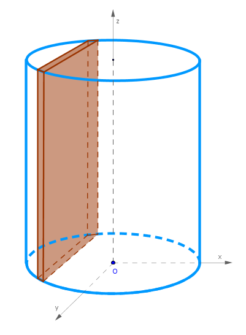
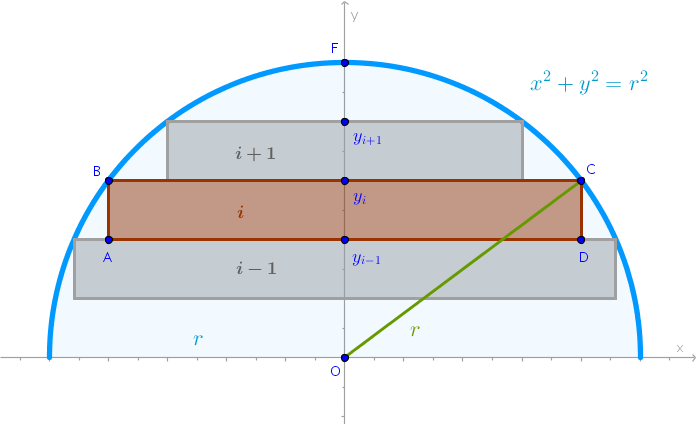

Right Circular Cylinder
Problem
Find the volume of a right circular cylinder of radius \(r\) and height \(h\).
Solution
Let us use thin right rectangular prisms as primitive parts:
Position the given cylinder in such a way that its axis of rotation coincides with the \(z\)-axis, for example, and consider one half of the cylinder cut off by the \(xOz\) plane, see the drawing below.
Divide \(OF = r\) into \(n\) line segments of equal length producing \(n\) points on \(Oy\):
$$y_1, y_2, \dots, y_n$$ $$y_1y_2 = y_2y_3 = \dots = y_{i - 1}y_i = \dots = y_{n - 1}y_n = \Delta y = \frac {r}{n}$$ $$y_i = \frac {r}{n} \times i$$Construct \(n\) planes perpendicular to \(Oy\) - one \(h_i\) plane through the corresponding \(y_i\). Each \(h_i\) plane will cut the cylinder producing two straight lines parallel to \(Oz\) - one such line is represented in the drawing below via the \(P_i\) point.
Construct \(2n\) planes perpendicular to \(Ox\) - one \(v_i\) plane through the corresponding \(P_i\) point. These planes, along with the planes perpendicular to \(Oz\) that define the cylinder's height, fully delineate two types of thin rectangular prisms - the ones that protrude beyond and the ones that are fully contained within the cylinder. Let us work with the latter ones represented as \(ABCD\) rectangle:
and numbered as shown above.
The height of each primitive right rectangular prism is:
$$\frac {r}{n}$$The width of the \(i-\)th prism is:
$$2 \times y_iC$$where \(y_iC\) is obtained from the right, by construction, triangle \(\triangle Oy_iC\) via the Pythagorean theorem:
$$y_iC = \sqrt{r^2 - Oy_i^2} =$$ $$\sqrt{r^2 - \frac{r^2}{n^2}i^2} =$$ $$\frac {r}{n}\sqrt{n^2 - i^2}$$The volume of the \(i-\)th primitive prism is:
$$V'_i = \frac {r}{n} \times 2\frac {r}{n}\sqrt{n^2 - i^2} \times h =$$ $$2\frac {hr^2}{n^2}\sqrt{n^2 - i^2}$$Sum the volumes of all the (\(n - 1\)) primitive prisms and multiply the result by \(2\) to add the remaining half of the cylinder:
$$V' = 2 \times 2 \frac {hr^2}{n^2}\sum_{n = 1}^{n - 1}\sqrt{n^2 - i^2}$$Apply the limit to \(V'\) as \(n \to +\infty\):
$$V = \lim_{n \to +\infty} V' =$$ $$4\lim_{n \to +\infty} \frac {hr^2}{n^2}\sum_{n = 1}^{n - 1}\sqrt{n^2 - i^2} =$$ $$4hr^2 \lim_{n \to +\infty} \frac {1}{n^2}\sum_{n = 1}^{n - 1}\sqrt{n^2 - i^2}$$But in Circle chapter of Square Areas section we have already calculated the magnitude of the above limit. The fact that in our particular sum the index \(i\) runs till \(n - 1\) and not till \(n\) does not affect the result because the last term in the previously calculated limit, when \(i = n\), is zero which is the volume of the \(n-\)th primitive prism in this particular configuration so we may add it to the sum without ill effects:
$$V = 4hr^2 \times \frac {\pi}{4} = \pi r^2 h$$ $$\bbox[#e8e8e8,3pt]{V = \pi r^2 h}$$
Right Elliptic Cylinder
To find the volume of a right elliptic cylinder of height \(h\) with semi-major axis \(a\) and semi-minor axis \(b\) the above right circular cylinder calculations change only in the computation of the corresponding height \(OF\) which is now:
$$\frac {b}{n}$$and width of the \(i-\) primitive prism, \(y_iC\). Since the point \(C\) is now positioned on the perimeter of an ellipse, we have:
$$\frac {y_iC^2}{a^2} + \frac {y_i^2}{b^2} = 1$$ $$y_iC = a \sqrt{1 - \frac {y_i^2}{b^2}} =$$ $$a \sqrt{1 - \frac {b^2i^2}{n^2b^2}} =$$ $$a \sqrt{1 - \frac {i^2}{n^2}} =$$ $$\frac {a}{n} \sqrt{n^2 - i^2}$$The volume of the \(i-\)th primitive prism then is:
$$V'_i = \frac {b}{n} \times 2\frac {a}{n}\sqrt{n^2 - i^2} \times h =$$ $$2\frac {abh}{n^2}\sqrt{n^2 - i^2}$$Two sums of all the volumes of the primitive prisms are:
$$V' = 2 \times 2 \frac {abh}{n^2}\sum_{n = 1}^{n - 1}\sqrt{n^2 - i^2} =$$ $$\frac {4abh}{n^2}\sum_{n = 1}^{n - 1}\sqrt{n^2 - i^2}$$The limit of \(V'\) as \(n \to +\infty\) is:
$$V = \lim_{n\to +\infty} \frac {4abh}{n^2} \sum_{i=1}^{n - 1}\sqrt {n^2 - i^2} =$$ $$4abh \lim_{n\to +\infty} \frac {1}{n^2} \sum_{i=1}^{n - 1} \sqrt {N^2 - i^2} =$$ $$4abh \times\frac {\pi}{4}$$And:
$$\bbox[#e8e8e8,3pt]{V = \pi abh}$$\(\blacksquare\)